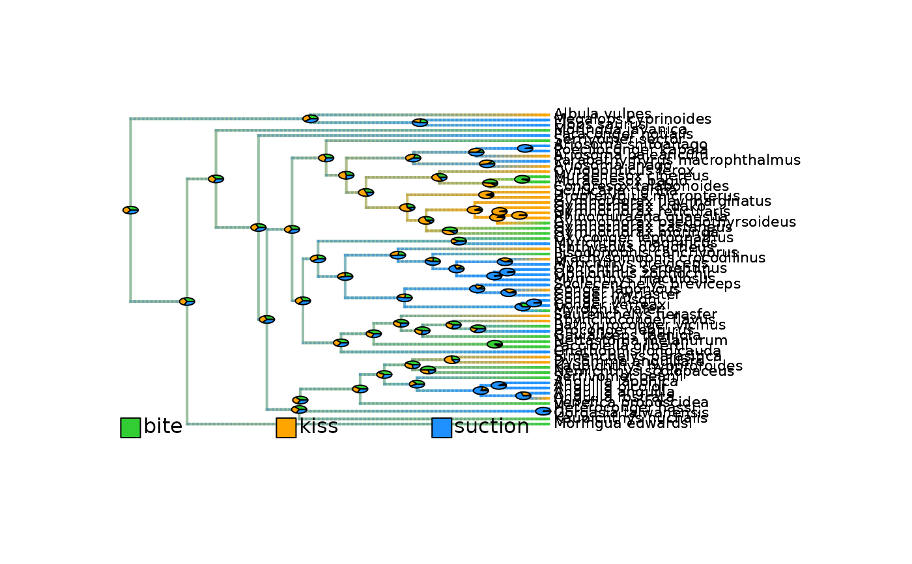
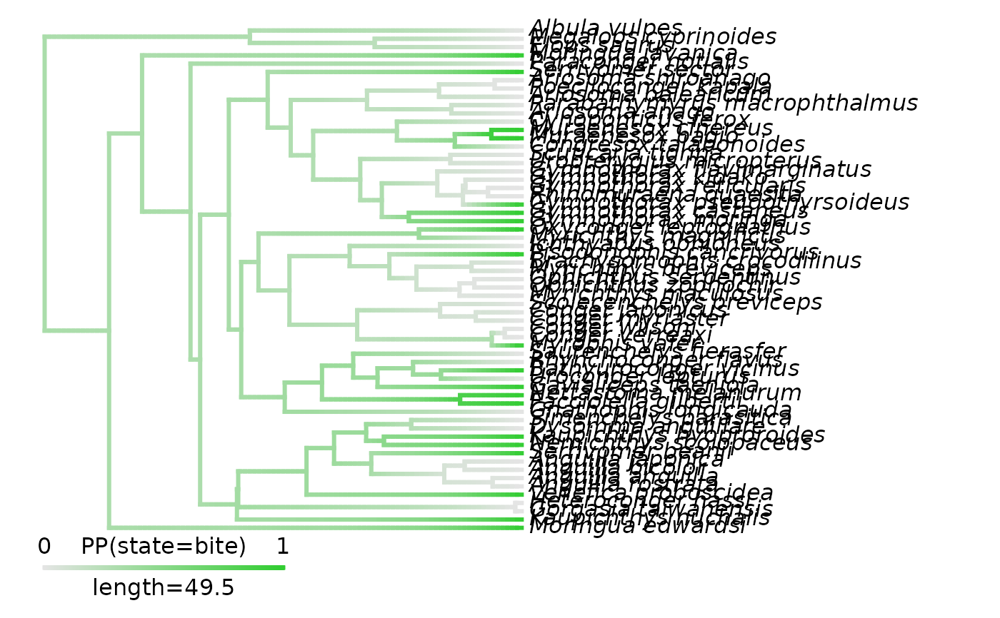
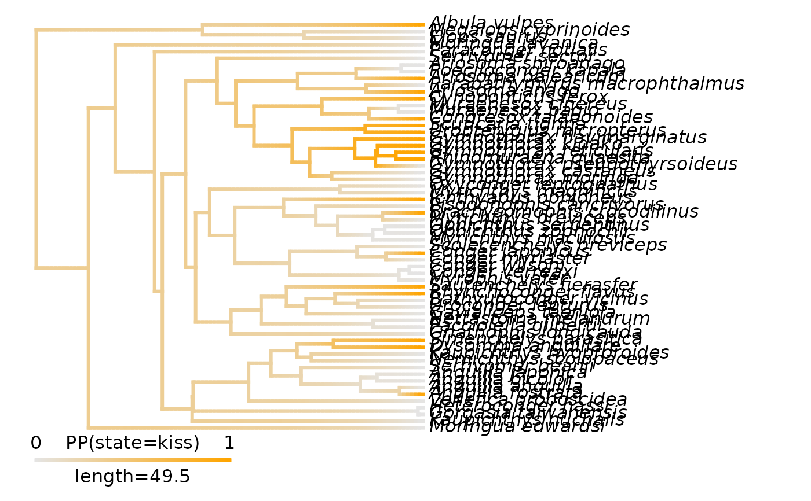
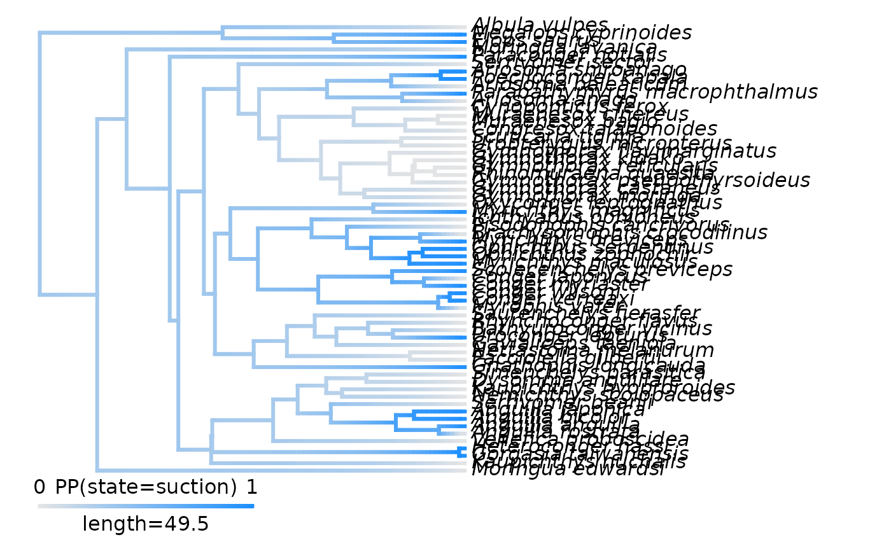
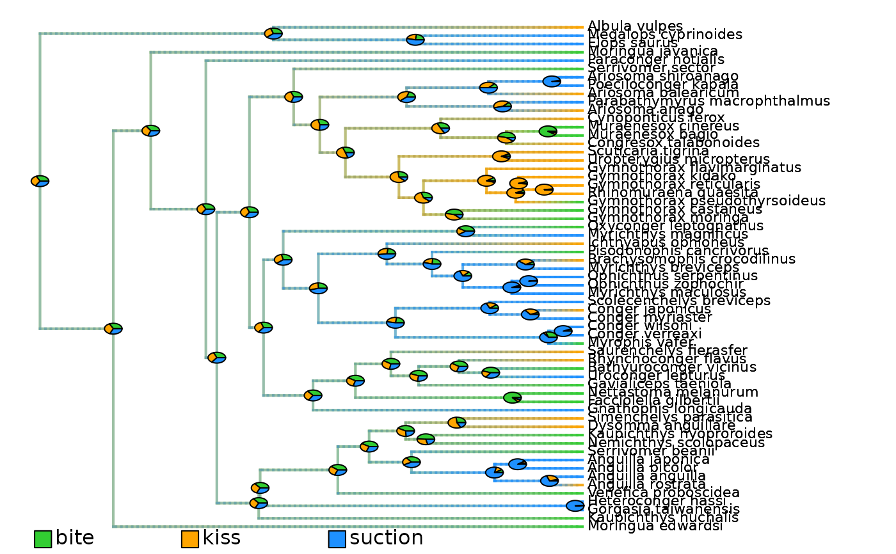

Plot posterior probabilities of states/ranges on phylogeny from densityMaps
Source:R/plot_densityMaps_overlay.R
plot_densityMaps_overlay.RdPlot on a time-calibrated phylogeny the evolution of a categorical trait/biogeographic ranges
summarized from densityMaps typically generated with prepare_trait_data().
Each branch is colored according to the posterior probability of being in a given state/range.
Colors for each state/range are overlaid using transparency to produce a single plot for all states/ranges.
Usage
plot_densityMaps_overlay(
densityMaps,
ace = NULL,
...,
colors_per_levels = NULL,
add_ACE_pies = TRUE,
cex_pies = 0.5,
display_plot = TRUE,
PDF_file_path = NULL
)Arguments
- densityMaps
List of objects of class
"densityMap", typically generated withprepare_trait_data(), that contains a phylogenetic tree and associated posterior probability of being in a given state/range along branches. Each object (i.e.,densityMap) corresponds to a state/range. If no color is provided for multi-area ranges, they will be interpolated.- ace
Numerical matrix. To provide the posterior probabilities of ancestral states/ranges (characters) estimates (ACE) at internal nodes used to plot the ACE pies. Rows are internal nodes. Columns are states/ranges. Values are posterior probabilities of each state per node. Typically generated with
prepare_trait_data()in the$aceslot. IfNULL(default), the ACE are extracted from thedensityMapswith a possible slight discrepancy with the actual tip states and estimated posterior probabilities of ancestral states.- ...
Additional arguments to pass down to
phytools::plotSimmap()to control plotting.- colors_per_levels
Named character string. To set the colors to use to map each state/range posterior probabilities. Names = states/ranges; values = colors. If
NULL(default), the color scale provided in thedensityMapswill be used. Provide the full argument name to avoid ambiguity with thecolgraphical argument.- add_ACE_pies
Logical. Whether to add pies of posterior probabilities of states/ranges at internal nodes on the mapped phylogeny. Default =
TRUE. Provide the full argument name to avoid ambiguity with theaddgraphical argument.- cex_pies
Numeric. To adjust the size of the ACE pies. Default =
0.5. Provide the full argument name to avoid ambiguity with thecexgraphical argument.- display_plot
Logical. Whether to display the plot generated in the R console. Default is
TRUE.- PDF_file_path
Character string. If provided, the plot will be saved in a PDF file following the path provided here. The path must end with ".pdf".
Value
If display_plot = TRUE, the function plots a time-calibrated phylogeny displaying the evolution of a categorical trait/biogeographic ranges.
If PDF_file_path is provided, the function exports the plot into a PDF file.
Author
Maël Doré
Original functions by Liam Revell in R package {phytools}. Contact: liam.revell@umb.edu
Examples
# Load phylogeny and tip data
library(phytools)
data(eel.tree)
data(eel.data)
# Transform feeding mode data into a 3-level factor
eel_data <- stats::setNames(eel.data$feed_mode, rownames(eel.data))
eel_data <- as.character(eel_data)
eel_data[c(1, 5, 6, 7, 10, 11, 15, 16, 17, 24, 25, 28, 30, 51, 52, 53, 55, 58, 60)] <- "kiss"
eel_data <- stats::setNames(eel_data, rownames(eel.data))
table(eel_data)
#> eel_data
#> bite kiss suction
#> 20 19 22
# Manually define a Q_matrix for rate classes of state transition to use in the 'matrix' model
# Does not allow transitions from state 1 ("bite") to state 2 ("kiss") or state 3 ("suction")
# Does not allow transitions from state 3 ("suction") to state 1 ("bite")
# Set symmetrical rates between state 2 ("kiss") and state 3 ("suction")
Q_matrix = rbind(c(NA, 0, 0), c(1, NA, 2), c(0, 2, NA))
# Set colors per state
colors_per_levels <- c("limegreen", "orange", "dodgerblue")
names(colors_per_levels) <- c("bite", "kiss", "suction")
# (May take several minutes to run)
# Run evolutionary models to prepare trait data
eel_cat_3lvl_data <- prepare_trait_data(tip_data = eel_data, phylo = eel.tree,
trait_data_type = "categorical",
colors_per_levels = colors_per_levels,
evolutionary_models = c("ER", "SYM", "ARD", "meristic", "matrix"),
Q_matrix = Q_matrix,
nb_simulations = 1000,
plot_map = TRUE,
plot_overlay = TRUE,
return_best_model_fit = TRUE,
return_model_selection_df = TRUE)
#> Warning: Entries in 'tip_data' were reordered to match 'phylo$tip.label.
#>
#> 2026-09-10 00:45:07.328336 - Fit 5 evolutionary model(s): ER, SYM, ARD, meristic, matrix.
#>
#> ------ ARD model ------
#>
#> GEIGER-fitted comparative model of discrete data
#> fitted Q matrix:
#> bite kiss suction
#> bite -0.030277451 3.952755e-25 3.027745e-02
#> kiss 0.037502683 -3.750268e-02 1.331551e-21
#> suction 0.001238872 3.344767e-02 -3.468654e-02
#>
#> model summary:
#> log-likelihood = -62.758696
#> AIC = 137.517393
#> AICc = 139.072949
#> free parameters = 6
#>
#> Convergence diagnostics:
#> optimization iterations = 100
#> failed iterations = 0
#> number of iterations with same best fit = 1
#> frequency of best fit = 0.010
#>
#> object summary:
#> 'lik' -- likelihood function
#> 'bnd' -- bounds for likelihood search
#> 'res' -- optimization iteration summary
#> 'opt' -- maximum likelihood parameter estimates
#>
#> ------ ER model ------
#>
#> GEIGER-fitted comparative model of discrete data
#> fitted Q matrix:
#> bite kiss suction
#> bite -0.04152112 0.02076056 0.02076056
#> kiss 0.02076056 -0.04152112 0.02076056
#> suction 0.02076056 0.02076056 -0.04152112
#>
#> model summary:
#> log-likelihood = -63.784402
#> AIC = 129.568804
#> AICc = 129.636601
#> free parameters = 1
#>
#> Convergence diagnostics:
#> optimization iterations = 100
#> failed iterations = 0
#> number of iterations with same best fit = 100
#> frequency of best fit = 1.000
#>
#> object summary:
#> 'lik' -- likelihood function
#> 'bnd' -- bounds for likelihood search
#> 'res' -- optimization iteration summary
#> 'opt' -- maximum likelihood parameter estimates
#>
#> ------ SYM model ------
#>
#> GEIGER-fitted comparative model of discrete data
#> fitted Q matrix:
#> bite kiss suction
#> bite -0.040962874 0.03174442 0.009218452
#> kiss 0.031744422 -0.05706395 0.025319531
#> suction 0.009218452 0.02531953 -0.034537983
#>
#> model summary:
#> log-likelihood = -63.442589
#> AIC = 132.885178
#> AICc = 133.306230
#> free parameters = 3
#>
#> Convergence diagnostics:
#> optimization iterations = 100
#> failed iterations = 0
#> number of iterations with same best fit = 53
#> frequency of best fit = 0.530
#>
#> object summary:
#> 'lik' -- likelihood function
#> 'bnd' -- bounds for likelihood search
#> 'res' -- optimization iteration summary
#> 'opt' -- maximum likelihood parameter estimates
#>
#> ------ Meristic model ------
#>
#> GEIGER-fitted comparative model of discrete data
#> fitted Q matrix:
#> bite kiss suction
#> bite -0.05519365 0.05519365 0.00000000
#> kiss 0.05519365 -0.09295038 0.03775672
#> suction 0.00000000 0.03775672 -0.03775672
#>
#> model summary:
#> log-likelihood = -63.667544
#> AIC = 131.335088
#> AICc = 131.541984
#> free parameters = 2
#>
#> Convergence diagnostics:
#> optimization iterations = 100
#> failed iterations = 0
#> number of iterations with same best fit = 81
#> frequency of best fit = 0.810
#>
#> object summary:
#> 'lik' -- likelihood function
#> 'bnd' -- bounds for likelihood search
#> 'res' -- optimization iteration summary
#> 'opt' -- maximum likelihood parameter estimates
#>
#> ------ User-defined matrix model ------
#>
#> GEIGER-fitted comparative model of discrete data
#> fitted Q matrix:
#> bite kiss suction
#> bite 0.00000000 0.00000000 0.00000000
#> kiss 0.02464787 -0.06273437 0.03808651
#> suction 0.00000000 0.03808651 -0.03808651
#>
#> model summary:
#> log-likelihood = -65.718012
#> AIC = 135.436023
#> AICc = 135.642920
#> free parameters = 2
#>
#> Convergence diagnostics:
#> optimization iterations = 100
#> failed iterations = 0
#> number of iterations with same best fit = 39
#> frequency of best fit = 0.390
#>
#> object summary:
#> 'lik' -- likelihood function
#> 'bnd' -- bounds for likelihood search
#> 'res' -- optimization iteration summary
#> 'opt' -- maximum likelihood parameter estimates
#>
#> 2026-09-10 00:45:51.582818 - Compare model fits.
#>
#> model logL k AIC AICc delta_AICc Akaike_weights rank
#> ER ER -63.78440 1 129.5688 129.6366 0.000000 62.3 1
#> SYM SYM -63.44259 3 132.8852 133.3062 3.669630 10.0 3
#> ARD ARD -62.75870 6 137.5174 139.0729 9.436348 0.6 5
#> meristic meristic -63.66754 2 131.3351 131.5420 1.905384 24.0 2
#> matrix matrix -65.71801 2 135.4360 135.6429 6.006319 3.1 4
#> 2026-09-10 00:45:51.584382 - Run simulations for stochastic mapping.
#>
#> make.simmap is sampling character histories conditioned on
#> the transition matrix
#>
#> Q =
#> bite kiss suction
#> bite -0.04152112 0.02076056 0.02076056
#> kiss 0.02076056 -0.04152112 0.02076056
#> suction 0.02076056 0.02076056 -0.04152112
#> (specified by the user);
#> and (mean) root node prior probabilities
#> pi =
#> bite kiss suction
#> 0.3333333 0.3333333 0.3333333
#> Done.
#> 2026-09-10 00:46:40.549933 - Extract ACE as posterior sampling from stochastic mapping.
#> 2026-09-10 00:46:42.448519 - Create densityMaps by summarizing simulations of evolutionary history (simmaps).
#>
#> 2026-09-10 00:47:03.383905 - Posterior probability computed for edge n°100/120
#> 2026-09-10 00:47:10.36682 - Posterior probabilities computed for State = bite - n°1/3
#> 2026-09-10 00:47:31.355417 - Posterior probability computed for edge n°100/120
#> 2026-09-10 00:47:38.38337 - Posterior probabilities computed for State = kiss - n°2/3
#> 2026-09-10 00:47:58.814069 - Posterior probability computed for edge n°100/120
#> 2026-09-10 00:48:05.52814 - Posterior probabilities computed for State = suction - n°3/3
#>
#> 2026-09-10 00:48:05.528376 - Plot a unique densityMap with for all states overlaid.

# Load directly output
data(eel_cat_3lvl_data, package = "deepSTRAPP")
# Plot densityMaps one by one
plot(eel_cat_3lvl_data$densityMaps[[1]]) # densityMap for state n°1 ("bite")

plot(eel_cat_3lvl_data$densityMaps[[2]]) # densityMap for state n°1 ("kiss")

plot(eel_cat_3lvl_data$densityMaps[[3]]) # densityMap for state n°1 ("suction")

# Plot overlay of all densityMaps
plot_densityMaps_overlay(densityMaps = eel_cat_3lvl_data$densityMaps)
